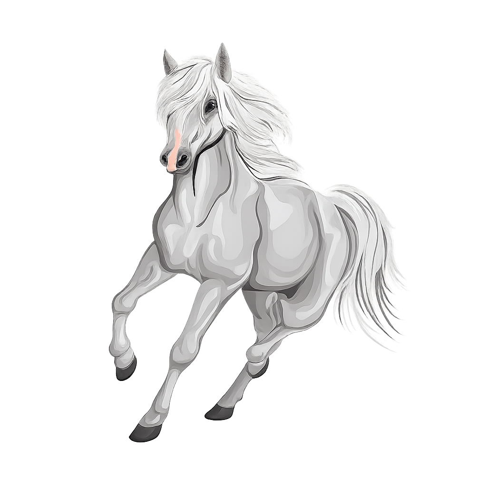

回歸親苑參拜の簡易指南
(提供統整資料作為參考，建議出發前與經親事務局再度確認。)
站內資訊搜尋(關鍵字)
行前申請
參座接心申請
研修所申請
團參申請
機票安排
住宿選擇
其他事項
交通指南
羽田→立川
成田→立川
立川→羽田
立川→成田
參拜指南
回歸親苑
親苑地圖
應現院地圖
接心道場地圖
接駁資訊
親苑 ⇄ 應現院
應現院 ⇄ Yana
其他資訊
Q&A
友心院 - 半藏門美術館
回 首 頁
周邊地圖
站內搜尋助理
您好！我可以從本站的景點、餐廳、交通、Q&A等資訊中為您搜尋答案。
詳細資訊
